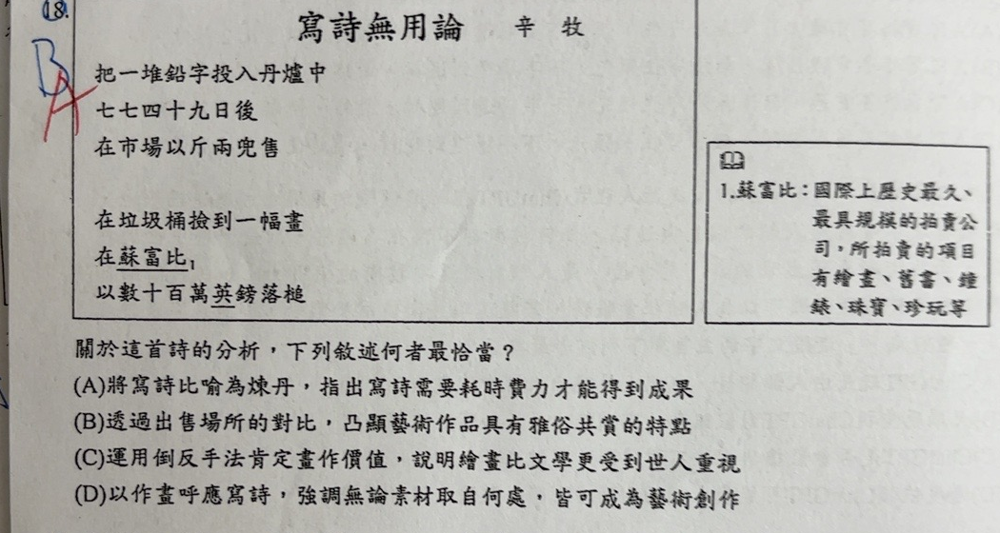

分享原卷｜第18題
完整原題
作答所需文章／材料
寫詩無用論 辛牧 把一堆鉛字投入丹爐中 七七四十九日後 在市場以斤兩兜售 在垃圾桶撿到一幅畫 在蘇富比 以數十百萬英鎊落槌 註：蘇富比：國際上歷史最久、最具規模的拍賣公司，所拍賣的項目有繪畫、書畫、瓷器、珠寶、珍玩等。關於這首詩的分析，下列敘述何者最恰當？
(A) 將寫詩比喻為煉丹，指出寫詩需要耗時費力才能得到成果
(B) 透過出售場所的對比，凸顯藝術作品具有雅俗共賞的特質
(C) 運用倒反手法肯定畫作價值，說明繪畫比文學更受到世人重視
(D) 以作畫呼應寫詩，強調無論素材取自何處，皆可成為藝術創作
先想一想，再查看答案、解說與原圖
原卷作答：原卷藍筆B，紅筆訂正A。
(A) 將寫詩比喻為煉丹，指出寫詩需要耗時費力才能得到成果
逐項解析
| 選項與原句 | 判讀 | 句意與判斷理由 |
|---|---|---|
| (A) 將寫詩比喻為煉丹，指出寫詩需要耗時費力才能得到成果 | 應選 | 鉛字投入丹爐、七七四十九日，將文字創作比喻為費時煉丹，符合詩句。 |
| (B) 透過出售場所的對比，凸顯藝術作品具有雅俗共賞的特質 | 不選 | 市場與拍賣場的對照呈現價值判定及價格的反差，不能由此推得雅俗共賞。 |
| (C) 運用倒反手法肯定畫作價值，說明繪畫比文學更受到世人重視 | 不選 | 詩中沒有以相反語意表達肯定的倒反手法；不能只因畫作高價成交就接受整個選項。 |
| (D) 以作畫呼應寫詩，強調無論素材取自何處，皆可成為藝術創作 | 不選 | 詩中是從垃圾桶撿到一幅畫，沒有描寫如何作畫，也沒有談創作素材來源。 |
詳細說明與解題步驟
選A。「一堆鉛字」象徵文字，「投入丹爐」「七七四十九日」將寫詩的鍛鍊字句比喻為煉丹，具體表現耗費時間與心力。後半節以垃圾桶撿到的畫作在拍賣場高價落槌，形成藝術價值與市場價格的反差。
B所說雅俗共賞不是詩中對比的重點；C把題目沒有運用的「倒反手法」套入，不能因部分描述價差就判整項正確；D更把「撿到畫」誤作「作畫」。原AI選C並誤認倒反，依完整詩句與選項訂正A。
核對註記：已實開真正上傳原卷及本題裁圖，逐題核對題幹、全部選項與必要閱讀材料。未提供實際考試日期，日期採首次使用者出題訊息的台灣日期；無教材冊章證據，歸綜合。
原圖（僅本題）
